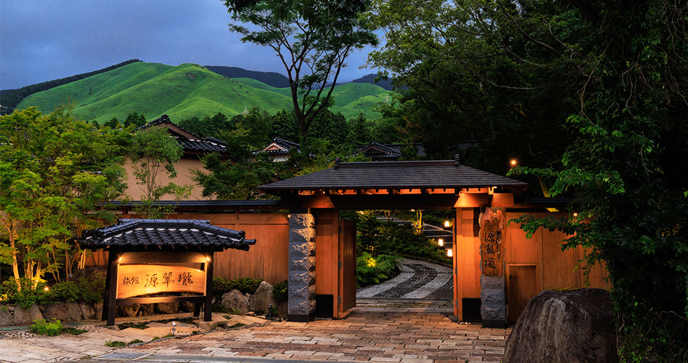
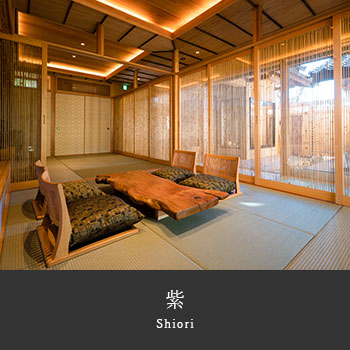
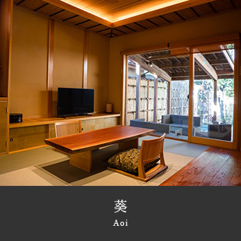
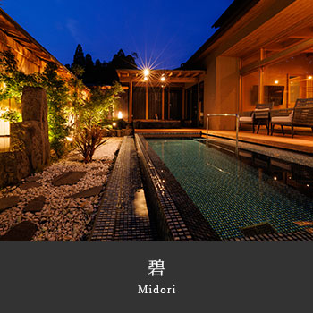
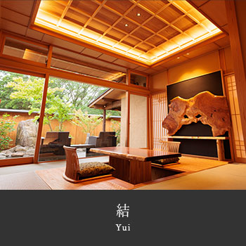
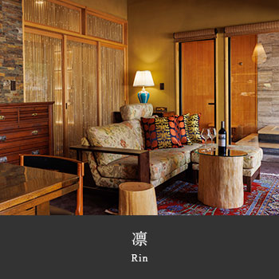
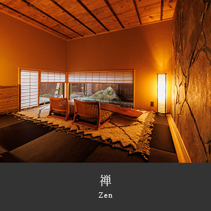
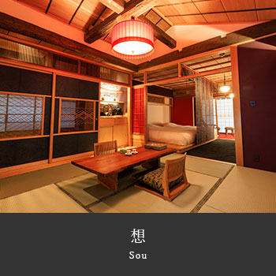

阿蘇 · 全室離れ 露天風呂付きAso · All-detached · Private Onsen阿苏 · 全房独栋 · 私汤露天
阿蘇を、嗜む。To savour Aso.细品阿苏。
4,000坪の敷地に佇む わずか十二棟のスイート
Twelve suites, hidden across a 4,000-tsubo estate at the foot of Aso.
4,000 坪庭园中，仅十二栋独立套房。
SCROLLSCROLL下滑
12
離れの客室Detached villas独立客房
4,000坪
広大な敷地Total estate广袤庭园
1,000m
地下からの源泉Source depth源泉深度
2023
創業Est.创业
黒川温泉などで知られる名泉が湧き出る阿蘇の温泉旅館｜源翠瓏（げんすいろう） Gensuirou — a hot spring ryokan at the foot of Mt. Aso, a source famed like Kurokawa 源翠瓏——涌自阿苏地下的温泉旅馆，与黑川温泉齐名的名汤
- 各お部屋ページで紹介動画を順次公開中です。「瑞」客室 →
- 新しくボディケアメニューがスタートしました（要事前予約）。詳細 →
- SNSで源翠瓏の写真や動画を公開中 — Instagram / YouTube
- アーリーチェックインについて（有料／14:30〜） — FAQをご覧下さい
- Room-page introductory videos are being published in sequence. See rooms →
- A new body-care menu has started (advance reservation required). Details →
- Photos and videos on social media — Instagram / YouTube
- Early check-in (paid, from 14:30) — see FAQ
- 各客房介绍视频陆续公开中。前往客房介绍 →
- 全新美体护理菜单开启（需提前预约）。详细内容 →
- Instagram / YouTube 上分享源翠瓏的照片与视频 — Instagram / YouTube
- 可付费办理提前入住（14:30 起）。详见常见问题
阿蘇を嗜む。
To savour Aso.
细品阿苏。
熊本阿蘇の山麓に佇む
静寂に包まれた くつろぎの空間
四季折々に彩られた花々と 夜空にひろがる星斗の下で
心に刻む 特別なひと時を At the foot of the Aso mountains in Kumamoto, wrapped in silence, a space of quiet ease. Beneath flowers that change with the four seasons and a night sky spread wide with stars — a moment to keep, unlike any other. 熊本阿苏山麓，静谧环抱之中的一方安憩之地。四季更迭的花木，繁星漫布的夜空之下——铭刻于心的特别时光。
静寂に包まれた くつろぎの空間
四季折々に彩られた花々と 夜空にひろがる星斗の下で
心に刻む 特別なひと時を At the foot of the Aso mountains in Kumamoto, wrapped in silence, a space of quiet ease. Beneath flowers that change with the four seasons and a night sky spread wide with stars — a moment to keep, unlike any other. 熊本阿苏山麓，静谧环抱之中的一方安憩之地。四季更迭的花木，繁星漫布的夜空之下——铭刻于心的特别时光。



十二の趣
全室離れの露天風呂付スイートルーム Twelve moods. Twelve villas.
All-detached suites with private open-air baths. 十二种情致。
十二栋独立别墅，露天温泉私汤客房。
全室離れの露天風呂付スイートルーム Twelve moods. Twelve villas.
All-detached suites with private open-air baths. 十二种情致。
十二栋独立别墅，露天温泉私汤客房。
4,000坪の広大な敷地の中にある
わずか十二棟の離れ宿は そのすべてがスイートルーム
伝統的な数寄屋造りとレトロモダンが融合した客室すべてに
源泉かけ流しの露天風呂を併設
プライベートな空間としてご利用頂けます Within a grand estate of 4,000 tsubo (over 13,000 m²), just twelve detached villas — each a full suite. Traditional sukiya-style architecture blended with retro-modern touches, every room paired with a natural hot-spring open-air bath, given entirely to your privacy. 4,000 坪（逾 13,000 平方米）的广袤庭园内，仅设十二栋独立别墅，全皆为套房。传统数寄屋建筑与复古摩登相融，每一间皆附源泉挂流的露天温泉。
わずか十二棟の離れ宿は そのすべてがスイートルーム
伝統的な数寄屋造りとレトロモダンが融合した客室すべてに
源泉かけ流しの露天風呂を併設
プライベートな空間としてご利用頂けます Within a grand estate of 4,000 tsubo (over 13,000 m²), just twelve detached villas — each a full suite. Traditional sukiya-style architecture blended with retro-modern touches, every room paired with a natural hot-spring open-air bath, given entirely to your privacy. 4,000 坪（逾 13,000 平方米）的广袤庭园内，仅设十二栋独立别墅，全皆为套房。传统数寄屋建筑与复古摩登相融，每一间皆附源泉挂流的露天温泉。

紫
Shiori

葵
Aoi

華
Hana

碧
Midori

瑩
Ei

結
Yui

凛
Rin

宙
Sora

瑞
Zui

皇
Sumeragi

禅
Zen

想
Sou
源 翠 瓏
Gen · Sui · Rou
源 翠 瓏
雄大で自然豊かな熊本の阿蘇。
その麓の小さな森に佇む十二棟の露天風呂付き離れ宿です
お風呂は源泉かけ流しの天然温泉で
各離れ客室の露天風呂のほかに
貸切大露天風呂やサウナルームもございます
また、和とフレンチを融合した創作料理は
山海の幸に恵まれた九州の厳選された食材を使用
美味しいおもてなしをご提供致します
四季で彩りを変える木々花々や 夜空に輝く満天の星々
ここでしか味わえない非日常の空間で
至福のひと時をお過ごしください In the grand nature of Kumamoto's Aso — twelve detached villas nestled in a small forest at its foot, each with an open-air onsen. The waters are natural hot-spring, source-flow only. Beyond the private baths in each villa, guests may also reserve the great outdoor bath and sauna. Our cuisine unites the traditions of Japan and France, drawn from Kyushu's mountain and sea. Beneath flora that shift with the four seasons and a sky filled with stars — a moment of bliss found nowhere else. 雄伟自然的熊本阿苏。山麓小森林中，静立十二栋露天温泉别墅，皆为源泉挂流的天然温泉。除各别墅私汤外，另设可包场的大露天浴场与桑拿房。融合和风与法式的创作料理，选用九州山海的精选食材，献上暖心款待。四季更迭的花木、缀满夜空的繁星——在这唯一无二的非日常之境，愿您度过至福时光。
その麓の小さな森に佇む十二棟の露天風呂付き離れ宿です
お風呂は源泉かけ流しの天然温泉で
各離れ客室の露天風呂のほかに
貸切大露天風呂やサウナルームもございます
また、和とフレンチを融合した創作料理は
山海の幸に恵まれた九州の厳選された食材を使用
美味しいおもてなしをご提供致します
四季で彩りを変える木々花々や 夜空に輝く満天の星々
ここでしか味わえない非日常の空間で
至福のひと時をお過ごしください In the grand nature of Kumamoto's Aso — twelve detached villas nestled in a small forest at its foot, each with an open-air onsen. The waters are natural hot-spring, source-flow only. Beyond the private baths in each villa, guests may also reserve the great outdoor bath and sauna. Our cuisine unites the traditions of Japan and France, drawn from Kyushu's mountain and sea. Beneath flora that shift with the four seasons and a sky filled with stars — a moment of bliss found nowhere else. 雄伟自然的熊本阿苏。山麓小森林中，静立十二栋露天温泉别墅，皆为源泉挂流的天然温泉。除各别墅私汤外，另设可包场的大露天浴场与桑拿房。融合和风与法式的创作料理，选用九州山海的精选食材，献上暖心款待。四季更迭的花木、缀满夜空的繁星——在这唯一无二的非日常之境，愿您度过至福时光。


ご予約・お問い合わせReservation & Enquiry预约 · 咨询
下記フォームよりお気軽にお問い合わせ下さいませ。担当より1営業日以内にご返信いたします。
Please send us an enquiry below. Our staff will reply within one business day.
请通过下方表单咨询，我们的工作人员将于一个工作日内回复。